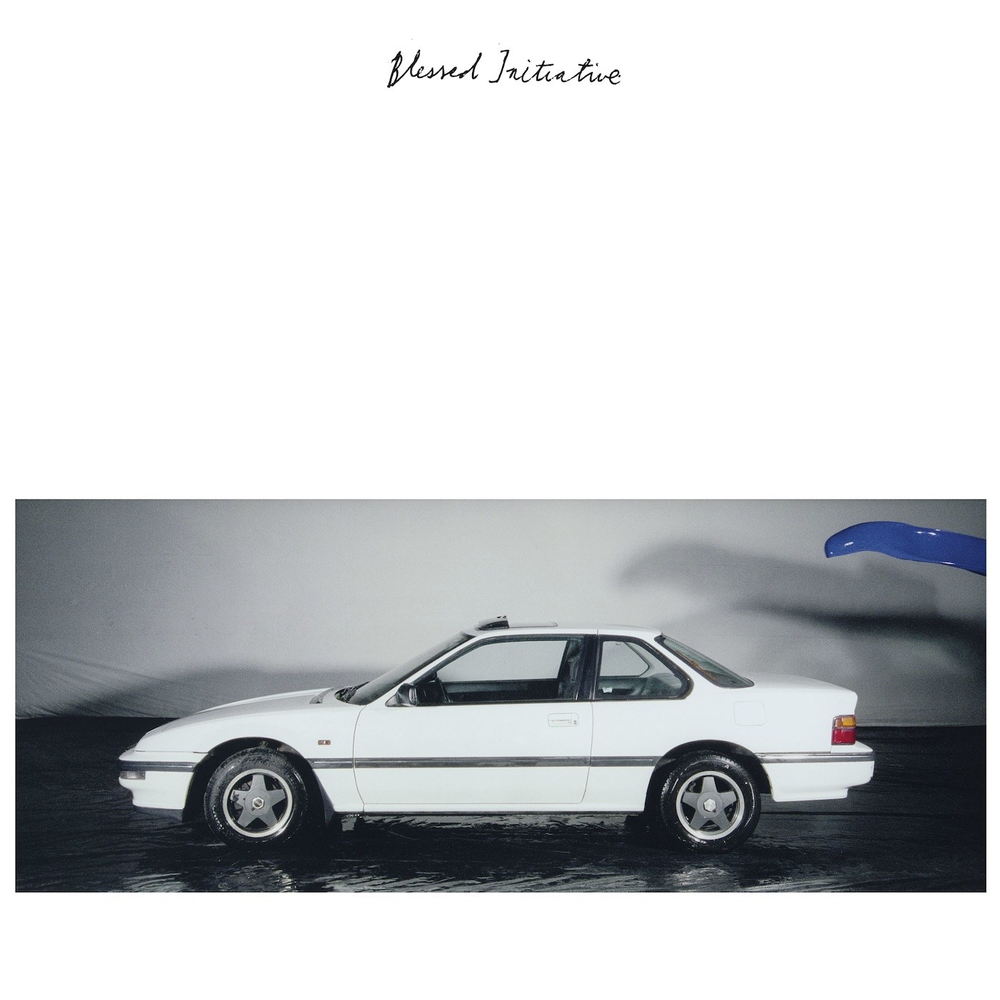
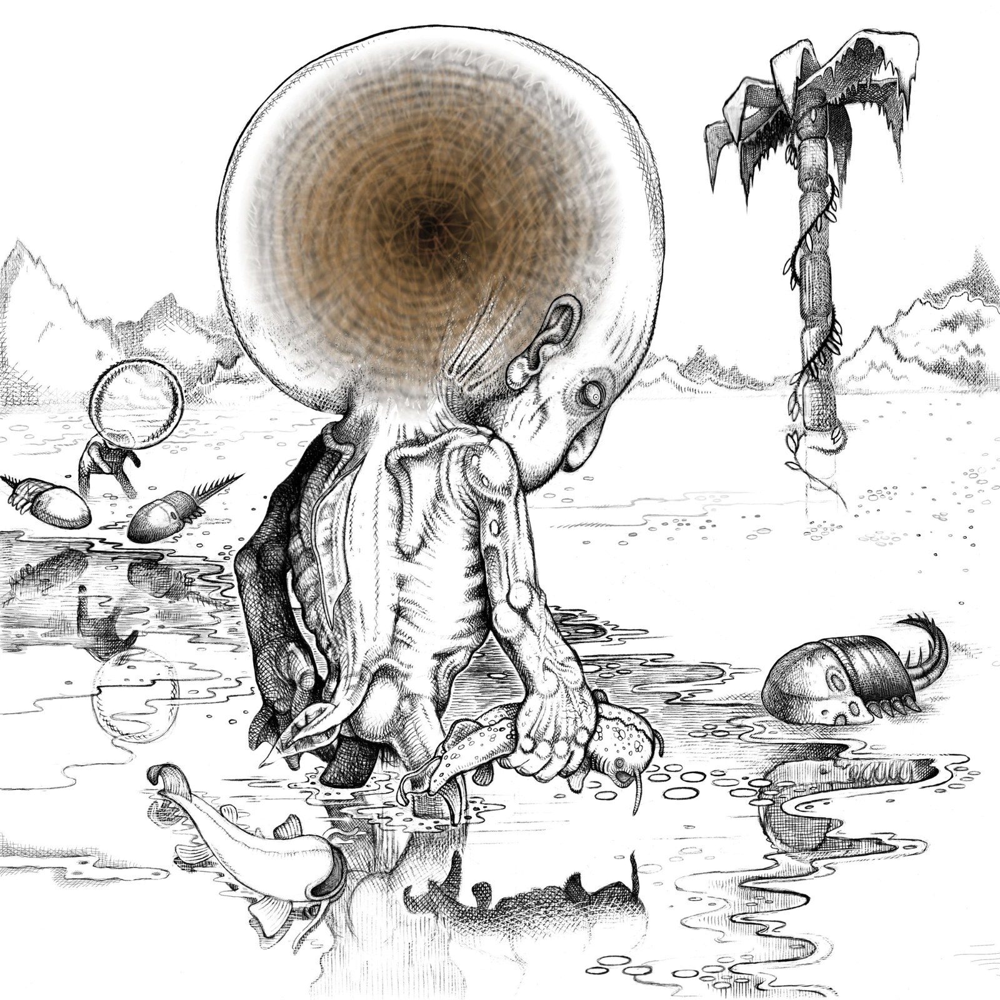
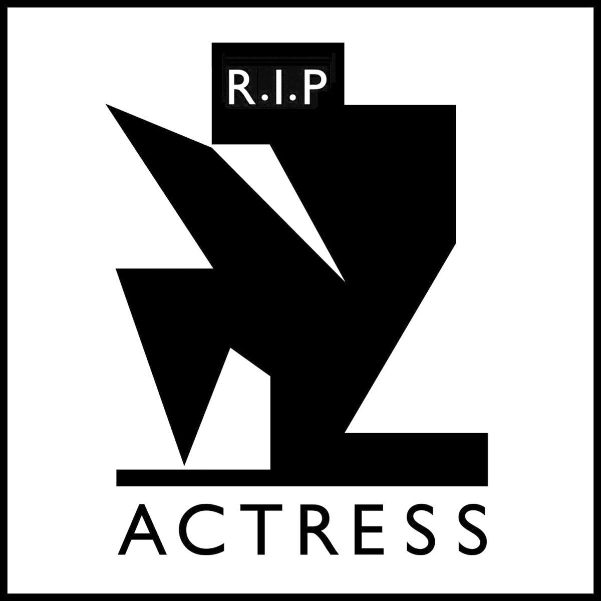
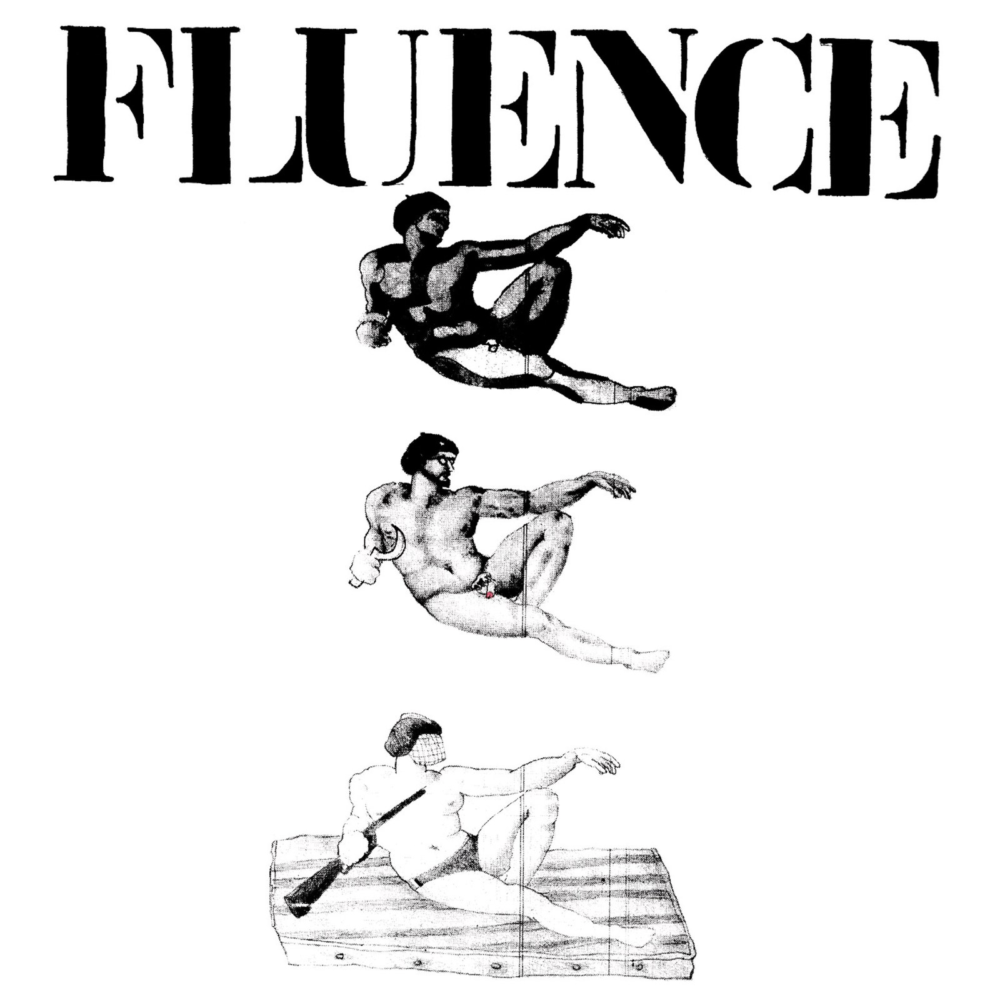
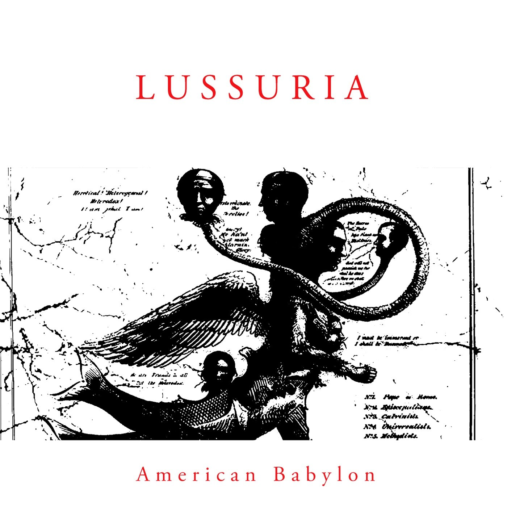
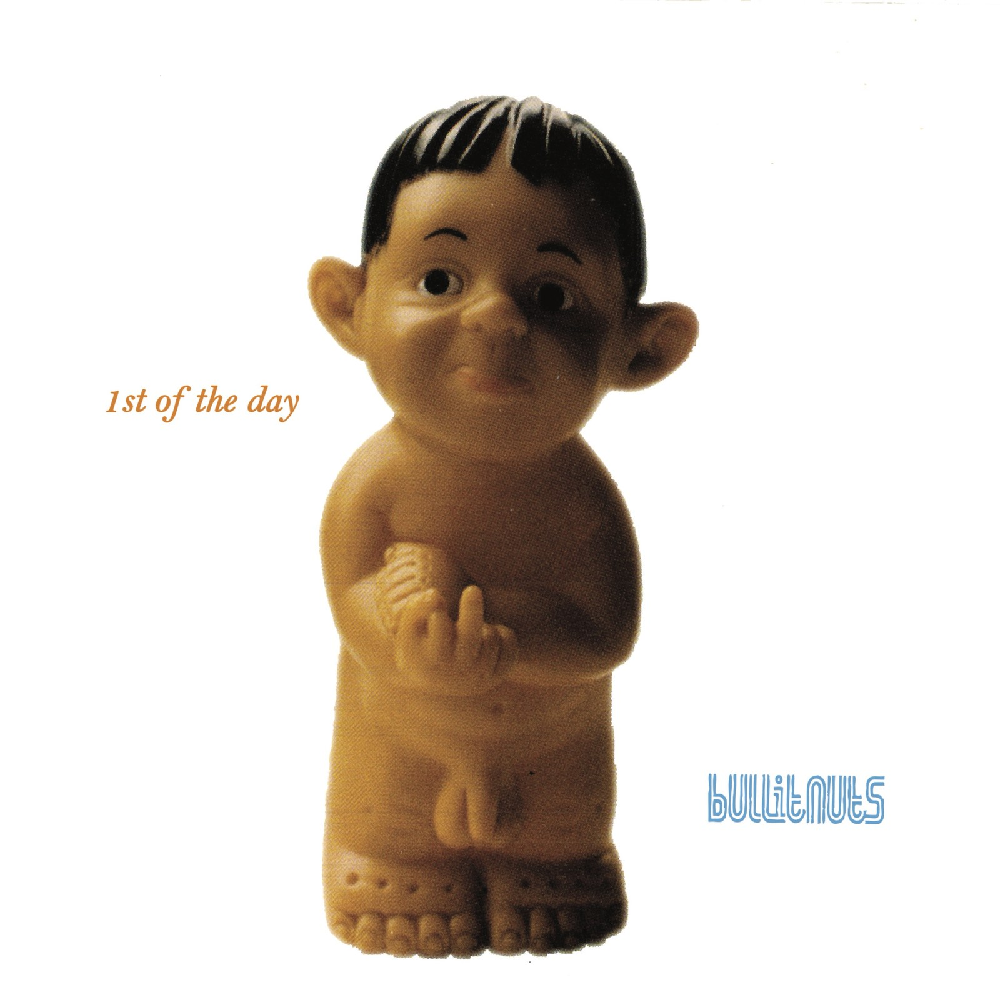
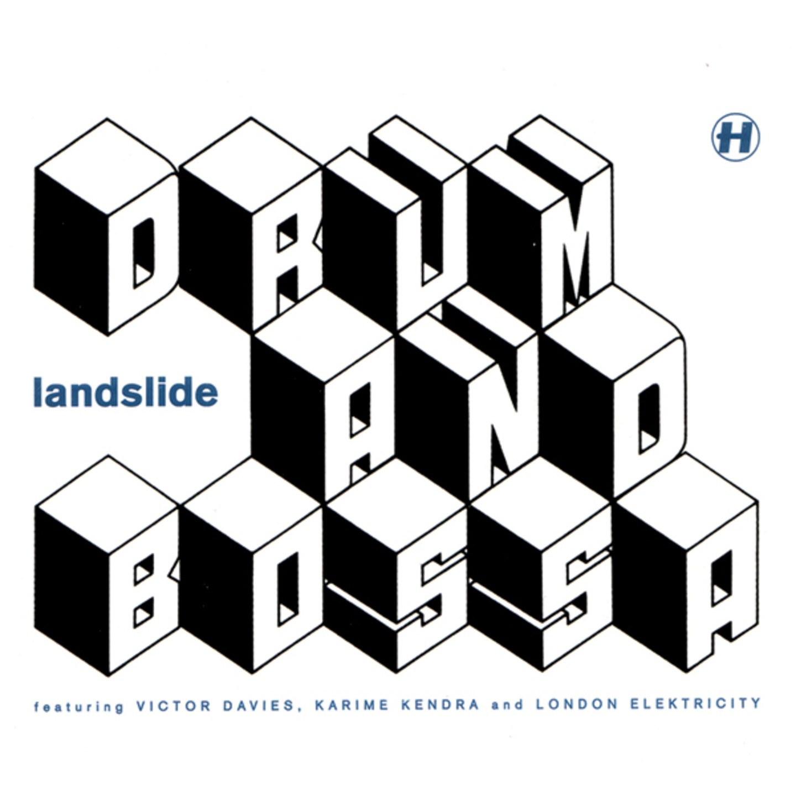
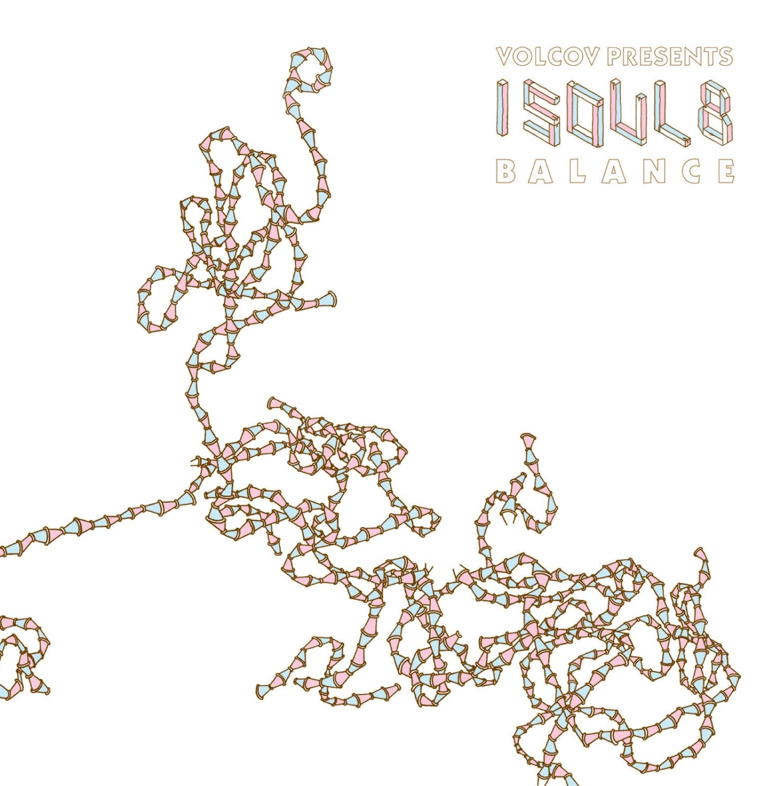

CRVI000005Rashad Becker - Traditional Music of Notional Species Vol. II
Artwork by Bill Kouligas · 2017
Artwork by Bill Kouligas · 2017
CRVI000006Objekt - Flatland
Artwork by Bill Kouligas, Kathryn Politis, Traianos Pakioufakis · Pan · 2014
Artwork by Bill Kouligas, Kathryn Politis, Traianos Pakioufakis · Pan · 2014

CRVI000014Bernard Bonnier - Casse‐tête
Designed by Eric Mattson · Amaryllis · 1984
Designed by Eric Mattson · Amaryllis · 1984

CRVI000025Gesellschaft Zur Emanzipation Des Samples - Circulations
Designed by Jens Reitemeyer · Faitiche · 2009
Designed by Jens Reitemeyer · Faitiche · 2009

CRVI000026Blessed Initiative - Blessed Initiative
Designed by John Coulthart · Subtext · 2016
Designed by John Coulthart · Subtext · 2016
CRVI000036Various - Close to the Noise Floor (Formative UK Electronica 1975-1984)
Designed by Lora Findlay · 2016
Designed by Lora Findlay · 2016

CRVI000047Various - Hohokum Soundtrack
Designed by Richard Hogg · Ghostly International · 2014
Designed by Richard Hogg · Ghostly International · 2014

CRVI000050Shackleton & Vengeance Tenfold - Sferic Ghost Transmits
Designed by Sandhya Ellis · Honest Jon's Records · 2017
Designed by Sandhya Ellis · Honest Jon's Records · 2017

CRVI000063Actress - R.I.P
Designer unknown · Honest Jon's Records · 2012
Designer unknown · Honest Jon's Records · 2012

CRVI000071David Kanaga - Dyad OGST
Designer unknown · Software · 2013
Designer unknown · Software · 2013

CRVI000077Fluence - Fluence
Designer unknown · Pôle Records · 1975
Designer unknown · Pôle Records · 1975

CRVI000085Lussuria - American Babylon
Designer unknown · Hospital Productions · 2012
Designer unknown · Hospital Productions · 2012

CRVI000087Tiziano Popoli, Marco Dalpane - Scorie
Designer unknown · Yaki Record · 1985
Designer unknown · Yaki Record · 1985

CRVI000091Nobukazu Takemura - Scope
Designer unknown · Thrill Jockey · 1999
Designer unknown · Thrill Jockey · 1999

CRVI000102Actress - Splazsh
Designed by Will Bankhead · Honest Jon's Records · 2010
Designed by Will Bankhead · Honest Jon's Records · 2010

CRVI000140Jutaro Itoh - 企業空間のサイン — Corporate Signs (Designing Signs Vol. 2)
Jutaro Itoh and Atsuko Taguchi · Rikuyo-sha
Jutaro Itoh and Atsuko Taguchi · Rikuyo-sha

CRVI000177Hank Mobley - Tenor Conclave
Designed by Bob Weinstock · Prestige LP 7074 · 1956
Designed by Bob Weinstock · Prestige LP 7074 · 1956
CRVI000232Abstract Truth - Get Another Plan
Designer unknown · Streetwave Music · 1996
Designer unknown · Streetwave Music · 1996

CRVI000237Bullitnuts - 1st Of The Day
Designer unknown · Pork Recordings · 1996
Designer unknown · Pork Recordings · 1996

CRVI000239Landslide - Drum And Bossa
Designer unknown · Hospital · 1998
Designer unknown · Hospital · 1998

CRVI000243Isoul8 - Balance
Designer unknown · Sonar Kollektiv · 2008
Designer unknown · Sonar Kollektiv · 2008